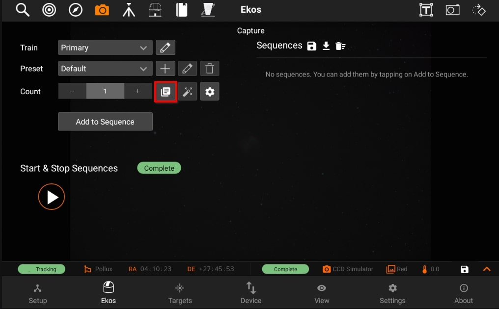
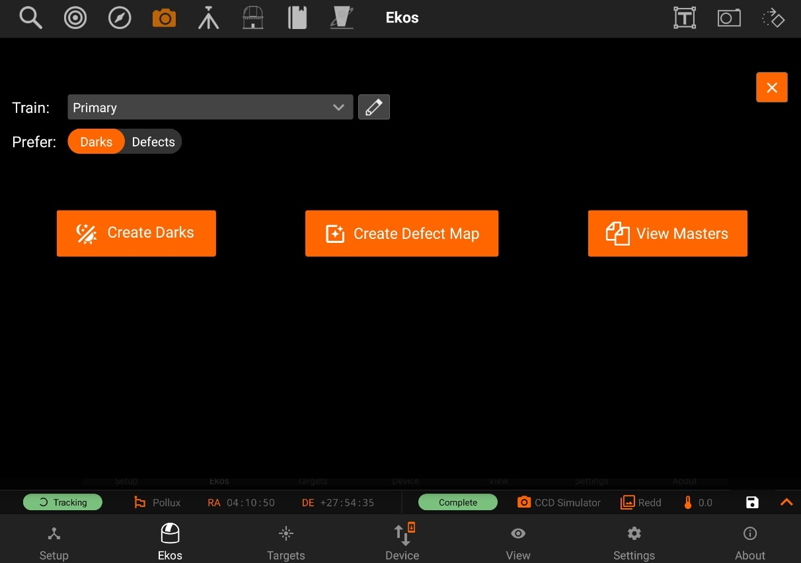
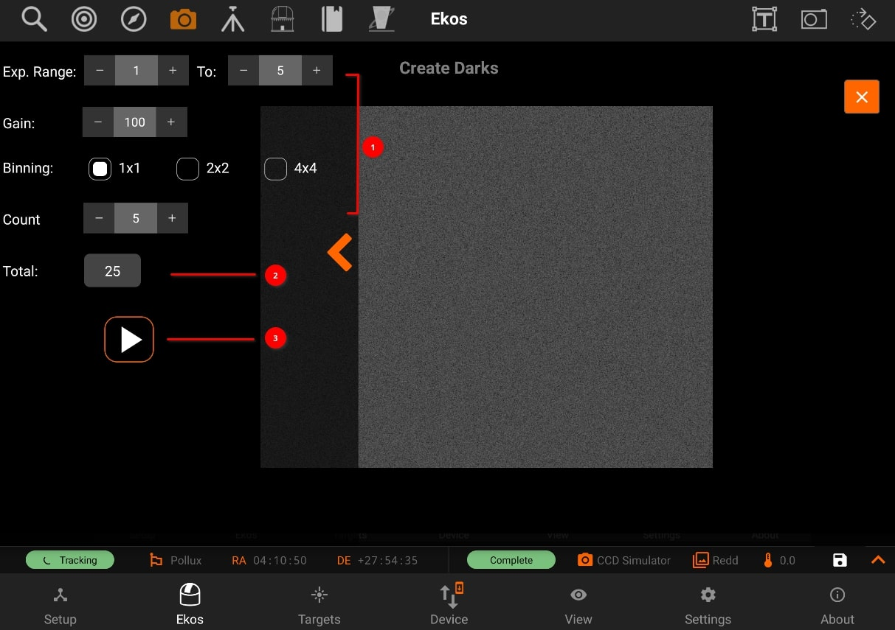
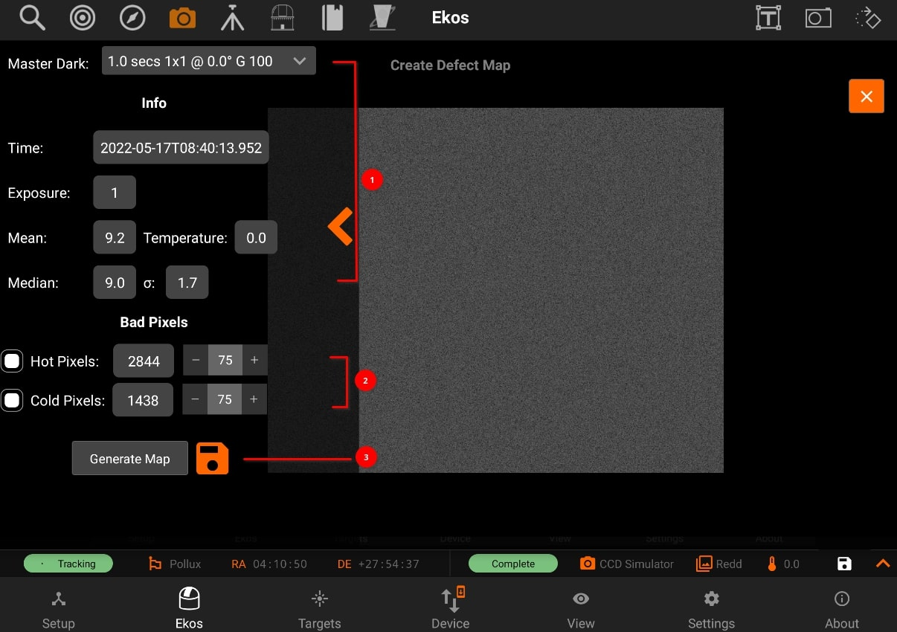
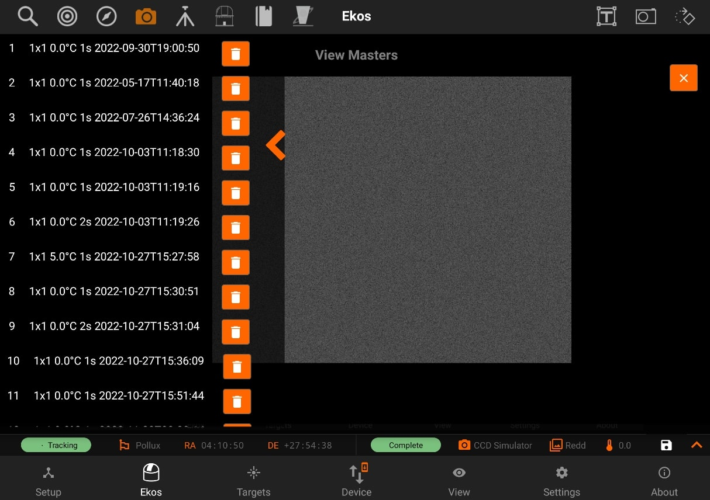

Dark Library
Dark Library


The Dark Library is a collection of dark frames captured from your cameras under different settings. There are basically five primary types of frames:
- Light Frame: This is the regular image captured by your sensor. It is called light because it captures the incoming light received at the sensor.
- Dark Frame: A frame captured with the same settings as the light frame (same temperature, exposure time, and binning) but with the shutter closed so that no photons reach the sensor. This is used to record the electronic noise generated by the sensor without any incident photons. It is used to remove noise from the Light Frame by means of subtraction since the Light Frame includes signal from both the incoming photons and electronic noise generated by the sensor.
- Bias: A very short exposure with the shutter closed.
- Flat: A frame captured with the same settings as the light frame (same temperature, exposure time, and binning) but subjected to an illuminated flat field source (such as an LED panel). This is used to correct for optical aberrations in the imaging train including dust motes.
- Dark Flats: Special type of dark frames captured at the same exposure of flat frames. This is used to calibrate the flat frames.
Dark Library is used to capture dark images.
Generating a dark library for your equipment profile is highly recommended. When capturing frames in focus, guide, and align modules, the system searches the dark library for suitable dark frames. If a suitable match is found, the light frame is calibrated and this can greatly enhance the performance and accuracy of all Ekos modules.
Note: "Dark Library is not used to calibrate your sequence images, it is only used to calibrate the Align, Focus, and Guide module frames."
Dark frame calibration can be applied using two methods:
- Dark Subtraction: The dark frame is simply subtracted from the light frame. This is the recommended method when using a cooled camera.
- Defect Maps: For uncooled cameras (e.g. Guide), dark frames may not be suitable for removing the hot and pixels present in the image. An alternative method generates a map of bad pixels that should be treated in the light frame. You can adjust the Hot and Cold pixels sliders to include or exclude pixels. It’s recommended not to include more than 5,000 pixels as it can become computationally expensive to correct this many pixels in guide images. Ekos corrects each defective pixel by using calculating the median value from surrounding pixels.
Preset: Select which capture preset to use. The camera name, gain, and offset are used from the preset while the exposure and temperature settings (if supported) are configured in the Create Dark Library window.
Prefer: Select which dark calibration method to utilize for the selected preset. Both methods are used to remove noise from the light frame:
- Dark: Remove noise by means of dark frame subtraction.
- Defect Maps: Remove noise by means of defect map substitution.
1. Create Darks:

Create a master dark frame by capturing and averaging a number of individual dark frames.
- Select the range of exposures, binning, temperatures and count (if applicable) required.
- Each time you change a selection, the Total Frames count is updated to reflect the required frames.
- When ready, tap the Play button to start the process.
2. Create Defect Map:

After creating a master dark, you can create a defect map for your camera. Usually, defect maps are used when dark frame subtraction does
not improve the quality of the calibration result. This is especially evident when using uncooled guide cameras that can exhibit hot pixels that are
hard to treat with classical dark frame subtraction methods.
- Selecting the master dark frame, loads the infomation of the image
- Then adjust Hot and Cold pixel sliders to include or exclude pixels.
- Click Generate Map to inspect the results and once satisfied tap the save button to store the defect map for future use.
3. View Masters:

Inspect master frames of a specific camera.